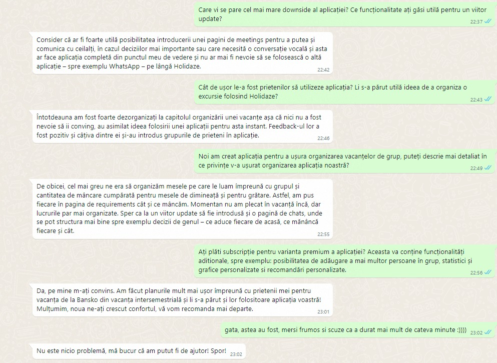

<!-- description Section -->
<section id="m8">
    <div class="container">
        <div class="row">
            <div class="col-lg-12 text-center">
                <h2 class="section-heading">Milestone 8</h2>
                <p><br></p>
                <div class="col-lg-12 text-center">
                    <h3 class="section-heading">Interviews</h3>
                    <p>We shared the MVP with frequent travelers, aged 20-30, which we considered to be our target audience. After letting them tried the application in its current state, they gave us useful feedback.</p>
                    </img>
                    <br/><br/>
                </div>
                <div class="col-lg-12 text-center">
                    <h3 class="section-heading">Interview Conclusions</h3>
                    <p>After the interviews, the users came with mostly positive feedback:</p>
                    <ul>
                        <li>The voting sistem clearly exposes the wishes of the members and can make decision making easier.</li>
                        <li>Having all the information structured in one place is very useful. This means you don't have to navigate through WhatsApp groups, messages and links. Instead, everything is organized and you can find what you're looking for easier.</li>
                        <li>Integrating multiple aspects in one app provides a better user experience. For example, instead of making a Strawpool and sending it on a WhatsApp group, making a voting sesion and viewing its results in the app is more user friendly.</li>
                    </ul>
                    <p>The users also gave us some suggestions on how to make the application more useful:</p>
                    <ul>
                        <li>The requirements page could also use like/dislike buttons</li>
                        <li>The voting system could have more granular options, instead of just yes/no. For example, making a voting and chosing from a list of accomodations.</li>
                        <li>A calendar would enable users to clearly see when things are supposed to happen (eg. flights/activities)</li>
                        <li>An expense tracker or a shopping list functionality could be useful (similar to SplitWise). For example, a user said it would be useful to know how much each member should pay for shared expenses.</li>
                        <li>A recommendation system could help users discover flights, accomodations or periods of travel. From a business point of view, it could also give us opportunities for business partnerships and in-app promotions.</li>
                        <li>A dashboard that includes all the decisions made by group members, where the admin will be able to rank them according to their importance as well as display them in an organized and intuitive manner.</li>
                        <li>Support for scheduling meetings for organizing the vacation.</li>
                    </ul>
                </div>
                <div class="col-lg-12 text-center">
                    <h3 class="section-heading">Overall Conclusions</h3>
                    <p>Our validation process gave us enough insight to realise that organising a group vacation is hard. People have trouble understanding others' needs, communicating and making decisions together.</p>
                    <p>However, we also realised that people currently have some solutions to the most common problems. A lot of people use WhatsApp groups to communicate and organize their vacations. They can search for flights on Google Flights or Skyscanner. They can make voting pools with Strawpool. They can use any Calendar application.</p>
                    <p>Nevertheless, the feedback from the MVP was positive. The core functionalities of the app can help organize a vacation more easily. We discovered that the main value proposition is that all of the functionalities are integrated in a single app which is easy to use.</p>
                    <p>This makes for a better user experience, because all of the information is structured and organized in a single place.</p>
                </div>
            </div>
        </div>
    </div>
</section>  
        